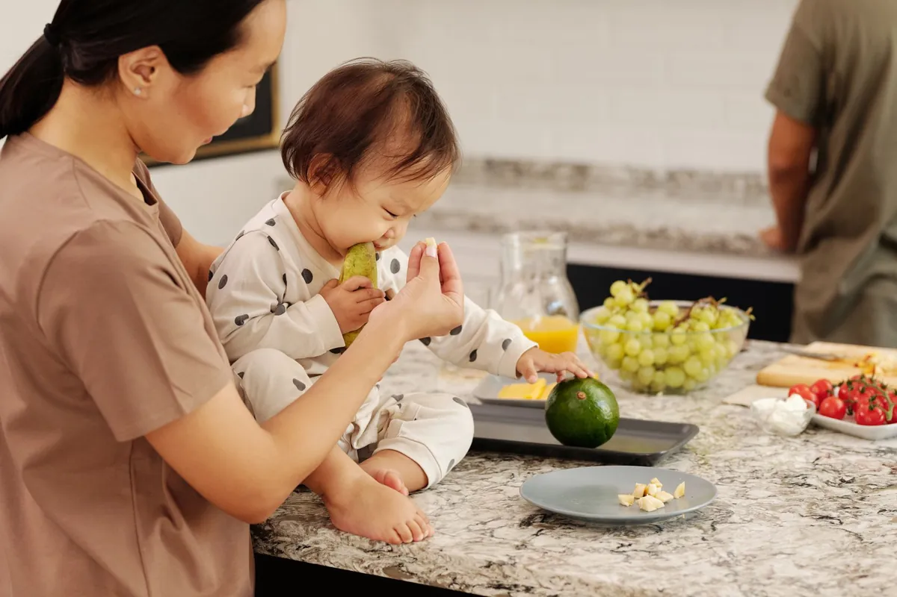
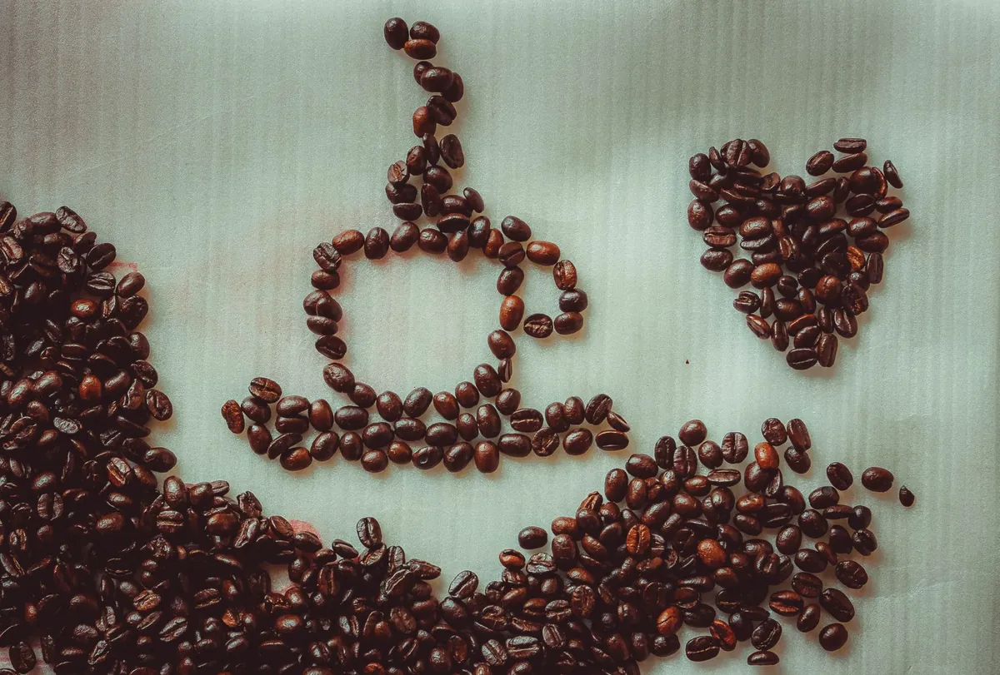

Booze Breakdown: Which Drink is Healthiest (or Least Unhealthy)?

Key takeaways
- I used to think that a glass of red wine every night was my ticket to heart health, a little indulgence that was actually *good* for me.
- It felt like a cheat code for well-being.
- Track what feels sustainable and adjust gradually.
I used to think that a glass of red wine every night was my ticket to heart health, a little indulgence that was actually *good* for me. It felt like a cheat code for well-being. But honestly, the guilt sometimes crept in. Was I really doing myself a favor, or just justifying my habit? The latest research is making me rethink everything, and I bet it's doing the same for you. So, let's do a real Booze Breakdown: Which Drink is Healthiest (or Least Unhealthy)?
For years, the narrative has been clear: red wine is the champion. Antioxidants, resveratrol, the whole nine yards. And sure, there's some truth to that. Studies have shown potential cardiovascular benefits linked to moderate red wine consumption. But here's where things get murky. A massive, recently published study involving millions of people has thrown a wrench into the works. It suggests that *any* amount of alcohol, regardless of the type, might carry more risks than previously understood. This isn't just about your heart anymore; it's about your overall health and even your longevity.
So, what does this mean for your beer-loving buddy, your wine-sipping friend, or the folks who prefer a stiff spirit? Are we all just playing a game of chance with our health, or is there a genuinely 'less unhealthy' option out there? I’ve spent way too much time pouring over the data, and let me tell you, it’s complicated. It’s not as simple as 'red wine is good, everything else is bad'.
The idea that moderate drinking, especially of red wine, is actively *beneficial* for long-term health and disease prevention.
While some compounds in red wine *might* offer minor benefits in isolation, the alcohol itself is a toxin. The risks associated with alcohol consumption – including increased cancer risk, liver damage, and impaired cognitive function – often outweigh any potential positives, even at moderate levels. The research is increasingly pointing towards minimizing alcohol intake for optimal health.
When I look at the numbers, the differences between beer, wine, and spirits often boil down to calories, sugar content, and congeners (compounds that contribute to flavor and hangover severity). A light beer might have fewer calories than a sugary cocktail or a rich Cabernet. A clear spirit like vodka or gin, when mixed with a zero-calorie mixer like soda water, can be lower in calories and sugar than wine or beer. But we're talking about degrees of 'less unhealthy' here, not a green light to drink freely.
Consider the sugar factor. Many wines, especially sweeter varieties, can pack a surprising sugar punch. Beer, while often lower in sugar than wine, can be high in carbohydrates. Cocktails are notorious sugar bombs, often loaded with syrups and juices. If weight management or blood sugar control is your goal, this is a huge consideration. I've learned firsthand that those seemingly innocent mixers can add hundreds of calories and grams of sugar before you even taste the alcohol.
Then there are the congeners. These are byproducts of fermentation and distillation. Darker liquors like whiskey, brandy, and red wine tend to have more congeners than lighter spirits like vodka or gin. More congeners often mean a rougher morning after. So, if your main concern is avoiding a brutal hangover, sticking to lighter spirits or white wine might be your best bet. It’s a small win, but sometimes those are the ones that keep us going. For more on managing daily wellness, check out this related healthy tip.
The 2-Minute Win
Before your next drink, take a moment to check the nutritional information if available, or opt for a simple, sugar-free mixer like sparkling water or club soda. This small change can significantly reduce your calorie and sugar intake for the evening.
My personal journey has taught me that **consistency matters more than perfection**. It’s easy to fall into the trap of thinking one 'healthy' drink choice negates the overall impact of alcohol. But the reality is, the less alcohol you consume, the better. If you choose to drink, being informed is key. Understanding the caloric and sugar content of different beverages can help you make more mindful decisions. This is crucial for anyone looking to improve their overall well-being, and for that, I often refer to this another practical guide.
It's also worth noting the impact on sleep. Alcohol, even in small amounts, can disrupt sleep architecture, leading to less restorative sleep. While it might make you fall asleep faster, the quality of that sleep plummets. I've noticed this myself – a glass of wine might knock me out, but I wake up feeling groggy and unrested. This cycle can negatively impact everything from mood to metabolism. Understanding this is a key part of my similar wellness insight.
The real 'healthiest' alcohol choice? It's the one you don't drink. But if you do, aim for the lowest calorie, lowest sugar option, and drink it slowly with plenty of water in between.
For those looking to support their body's natural processes, especially when reducing alcohol intake or managing its effects, exploring supplements can be helpful. Magnesium, for instance, plays a role in hundreds of bodily functions and can be depleted by alcohol. Considering a high-quality supplement like Magnesium Glycinate could be a supportive step. You can find options here. It's about finding what works for you on your wellness journey, and this is a great way to explore more healthy-habits guides.
Ultimately, the Booze Breakdown: Which Drink is Healthiest (or Least Unhealthy)? doesn't offer a magic bullet. The research is clear: reducing or eliminating alcohol is the most beneficial path for most people. But if you enjoy a drink, knowledge is power. Choose wisely, drink mindfully, and remember that **every small, informed choice contributes to your long-term health**. This is how we stay consistent with this approach to wellness.
Educational only — not medical advice.
Disclosure: This page may contain affiliate links.
Recommended Reading
- Unlock Better Sleep: Quality Sleep Strategies for Optimal Health & Energy
- Boost Your Sleep Quality: Natural Remedies & Tips for Better Rest
- Beyond Calories: The Real Reason Bread Might Be Making You Gain Weight
More in health

healthIs Your Toddler Eating Ultra-Processed Foods? The Shocking Truth About Toddler Meals
Discover the shocking truth: 80% of toddler foods are ultra-processed. Learn what this means for your child's health and
Read article →
healthCoffee vs. Energy Drinks: Your Heart's Best Friend or Worst Enemy?
Unpacking the science: Is coffee or energy drinks better for your heart? Discover the truth about Coffee vs. Energy Drin
Read article →